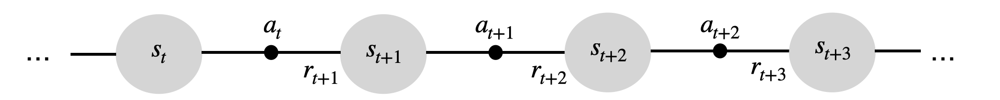

Deep Reinforcement Learning
Advantage actor-critic (A2C, A3C)
Distributed RL
- We cannot get an uncorrelated batch of transitions by acting sequentially with a single agent.

- A simple solution is to have multiple actors with the same weights \theta interacting in parallel with different copies of the environment.

Each rollout worker (actor) starts an episode in a different state: at any point of time, the workers will be in uncorrelated states.
From time to time, the workers all send their experienced transitions to the learner which updates the policy using a batch of uncorrelated transitions.
After the update, the workers use the new policy.
A3C : results


A3C set a new record for Atari games in 2016.
The main advantage is that the workers gather experience in parallel: training is much faster than with DQN.
LSTMs can be used to improve the performance.
A3C : results
- Learning is only marginally better with more threads:

but much faster!

Comparison with DQN
- A3C came up in 2016. A lot of things happened since then…

Early visual features
When working on images, the first few layers of the CNNs are likely to learn the same visual features (edges, contours).
It would be more efficient to share some of the extracted features.

Gaussian policies
A Gaussian policy considers the vector \mathbf{a} to be sampled from the normal distribution \mathcal{N}(\mu_\theta(s), \sigma_\theta(s)).
The mean \mu_\theta(s) and standard deviation \sigma_\theta(s) are output vectors of the actor with parameters \theta.
Sampling an action from the normal distribution is done through the reparameterization trick:
\mathbf{a} = \mu_\theta(s) + \sigma_\theta(s) \, \xi
where \xi \sim \mathcal{N}(0, I) comes from the standard normal distribution.

Gaussian policies
- A Gaussian policy samples actions from the normal distribution \mathcal{N}(\mu_\theta(s), \sigma_\theta(s)), with \mu_\theta(s) and \sigma_\theta(s) being the output of the actor.
\mathbf{a} = \mu_\theta(s) + \sigma_\theta(s) \, \xi
- The score \nabla_\theta \log \pi_\theta (s, a) can be obtained easily using the output of the actor:
\begin{cases} \nabla_{\mu_\theta(s)} \log \pi_\theta (s, a) = \dfrac{a - \mu_\theta(s)}{\sigma_\theta(s)^2} \\ \\ \nabla_{\sigma_\theta(s)} \log \pi_\theta (s, a) = \dfrac{(a - \mu_\theta(s))^2}{\sigma_\theta(s)^3} - \dfrac{1}{\sigma_\theta(s)}\\ \end{cases}
The rest of the score (\nabla_\theta \mu_\theta(s) and \nabla_\theta \sigma_\theta(s)) is the problem of tensorflow/pytorch.
This is the same reparametrization trick used in variational autoencoders to allow backpropagation to work through a sampling operation.
Beta distributions are an even better choice to parameterize stochastic policies (Chou et al., 2017).